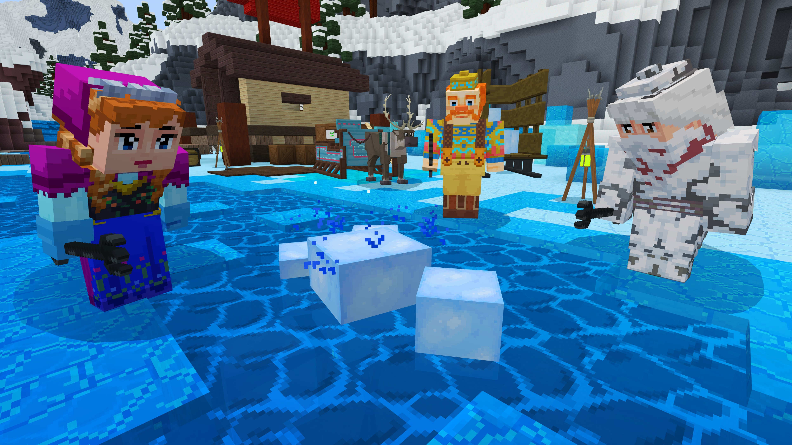

Giới Thiệu
Minecraft - Tựa game sáng tạo thế giới xây dựng tạo vương quốc chở thành vua của thế giới hậu tận thể bởi đại dịch zombie các bạn sẽ chiến đấu với zombie. Chắc hẳn ở Việt Nam cũng có khá nhiều máy chủ lớn, mạnh và tối ưu hơn máy chủ của mình nhưng tình trạng đầy cũng diễn ra phổ biến! Nên mình tạo thêm một máy chủ Minecraft mới cho anh em chơi cùng nhau cho vui! Mình cũng Việt hóa nhiều thứ trong Máy chủ để tiện cho người chơi hơn!.Minecraft có hơn 126 triệu người chơi toàn thế giới

SkyBlock
Thể lệ chơi này là một dạng thể lệ chơi mới
trong MineCraft và rất được ưa
thích vì độ vui của nó! Không giống như sinh tồn, bạn sẽ xuất hiện trên một hòn đảo nhỏ trên
trời
với một cái xô nham thạch và ba cục băng! Hãy sử dụng nó một các khôn ngoan để xây dựng nên một
hòn
đảo tuyệt vời và mang phong các của riêng bạn đi nào!
Tuyệt vời nhất! Phát triển hòn đảo cùng với bạn bè
Phiêu lưu tới những vùng đất mới!
Prison
“Tù” ở đây không phải là Jail nhá.
Đây là chế độ mà bạn không thể được tự do chạy nhảy như với Survival,
không được hít thở không khí trong lành như Skyblock,
không thể thoả sức sáng tạo với Creative. Ở chế độ này, công việc hàng ngày của bạn chỉ là ngồi
đào, đào và bới từng khối lên để bán kiếm tiền và nâng cấp Rank cho bản thân. Nghe vậy thôi
nhưng cũng rất đáng để thử đấy !